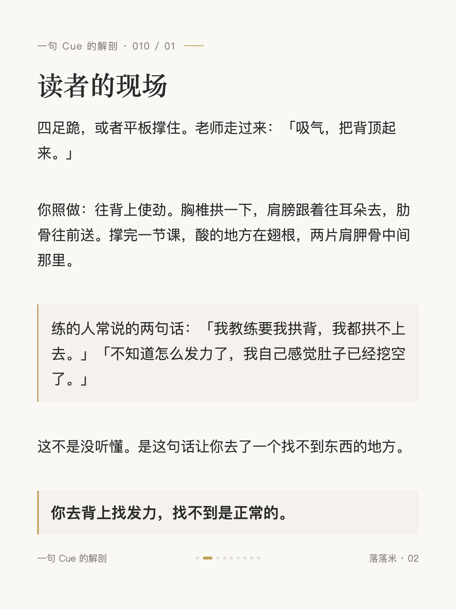
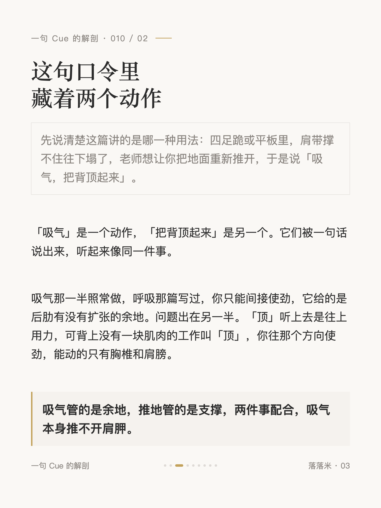
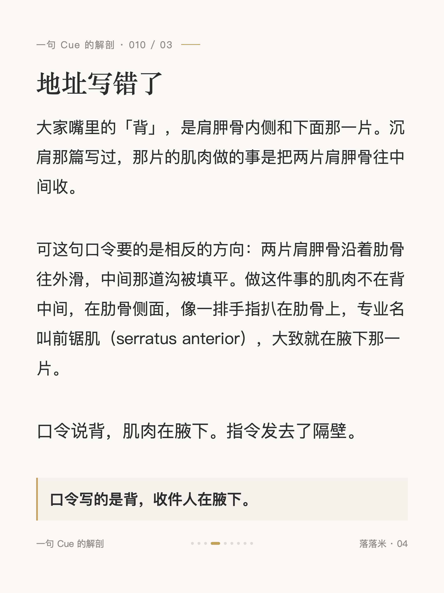
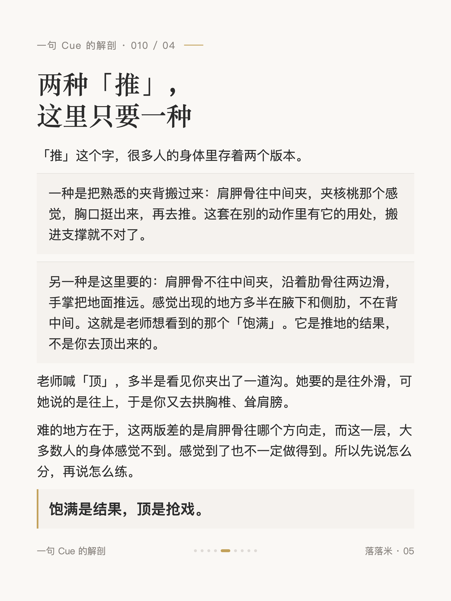
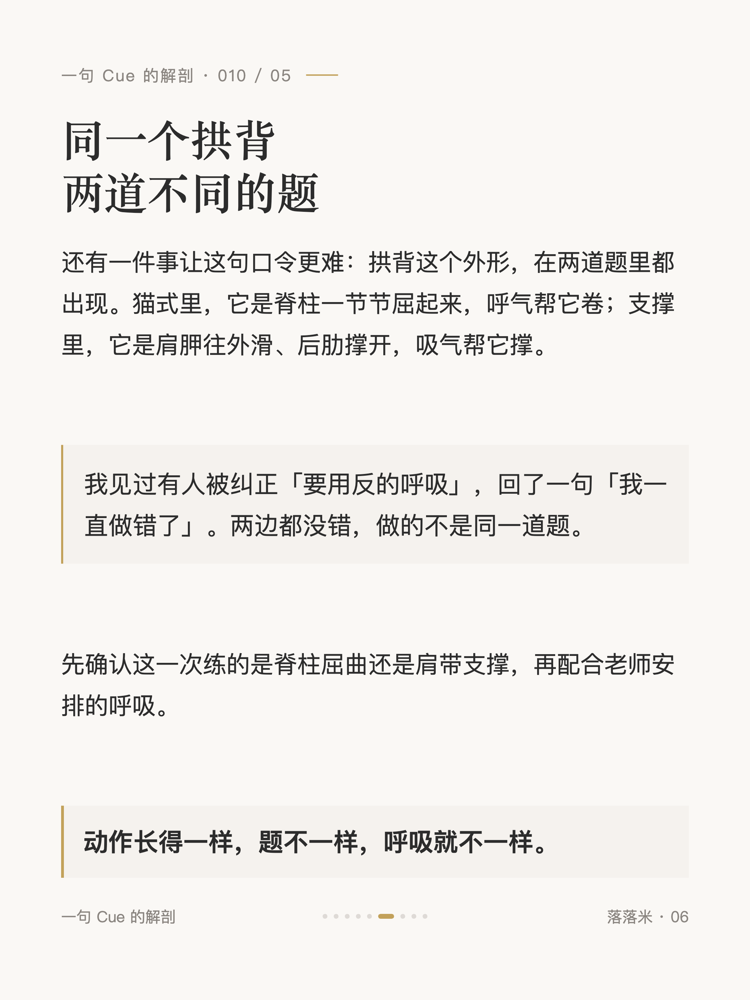
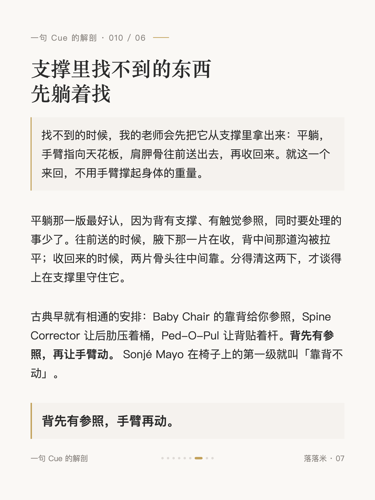
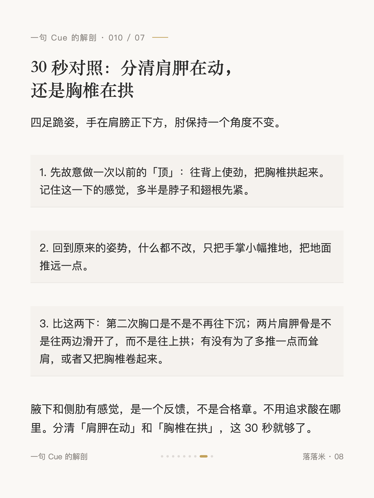
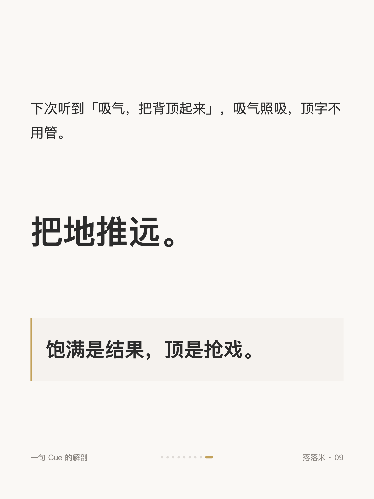

解剖学系列 #010
普拉提说把背顶起来，顶的是哪里

1 / 9

2 / 9

3 / 9

4 / 9

5 / 9

6 / 9

7 / 9

8 / 9

9 / 9
← 左右滑动浏览全部卡片 →
每个老师都这么说。顶的到底是哪里，没人往下讲。
「吸气」是一个动作，「把背顶起来」是另一个。吸气管的是余地，推地管的是支撑。口令写的是背，收件人在腋下。
下次听到「吸气，把背顶起来」，吸气照吸，顶字不用管。把地推远。饱满是结果，顶是抢戏。